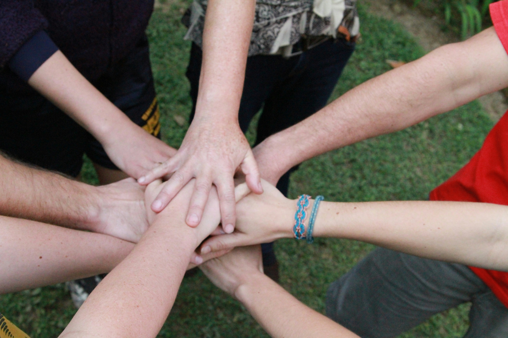
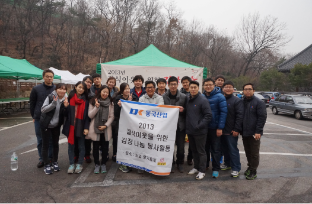
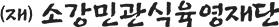
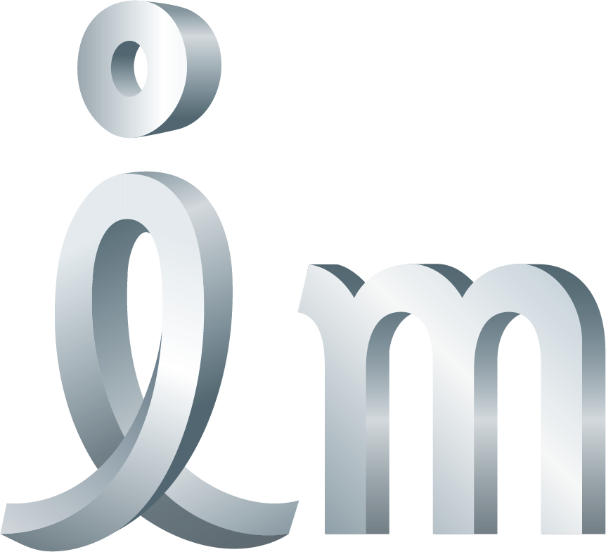

동행
함께 만드는 나눔
상생
의료 및 자립 지원
온기
일상의 행복 전달
지속가능한 나눔
2009년부터 시작된 동국산업의 나눔 전통으로,
임직원 성금에 회사가 동일 금액을 더하는
'매칭 그랜트'를 통해 소외된 이웃을 후원합니다.

겨울 김장 나눔 봉사를 통해 소중한 온기를
나누며, 도움이 필요한 이웃들이 따뜻하고 행복한 겨울을 보낼 수 있도록 나눔의 가치를 실천하고 있습니다.

